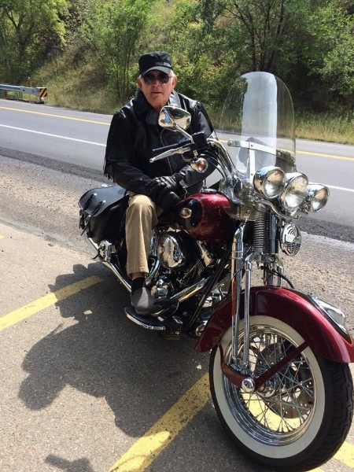

1945 - 2022
In celebration of Jim Wodke, please contribute your photos, and stories. Share the link to those who would like to honor his memory.
James (Jim) Charles Wodke, Jr., was called to his eternal home with the Lord on August 18th, 2022.
Jim was born to Dorothy (Garrett) and James (Jake) Wodke Sr. on January 12th, 1945, in Council Grove, Kansas. They lived there until he was in the 1st grade, when the family moved to Herington, Kansas.
At 17, he married Diana Dix, and they had four children from that union. In Herington, Jim worked for the Rock Island Railroad. When he realized the Rock Island had no future, he moved his family to Alliance, Nebraska. He spent several years working on the BNSF Railroad, where he also enjoyed serving as Local Chairman for several years.
In 1990, Jim married Linda Freiberger and, from that union, they had one child. In 1992, he made a career change, becoming an investigator for Yeager Law firm specializing in FELA Law. In 1996, his career took him and his family to Loveland, CO. In time, he switched to The Rossi Vucinovich Law firm and was most recently working as a lead investigator.
Jim enjoyed his family, home brewing, riding his Harley, dining at restaurants, and spending time on his iPad.
His wife Linda Wodke,
brother Brad Wodke and his wife JoAnn,
son Brett Wodke,
daughter Tina Ringleman and her husband Dennis,
daughter RaShelle Kaiser and her husband Dan,
daughter Tara Quick and her husband Deon,
son Jeremiah Wodke,
step-daughter Krista Davis and her husband LaVon,
and step-daughter Ingrid Johnson
60 grandchildren and great-grandchildren, aunts, uncles and many nieces and nephews.
father James Wodke,
mother Dorothy (Garrett) Dozier,
brother Stanley Eugene Wodke,
sister Brenda Sue “Dolly” Wodke,
his grandparents,
and many loved ones.
A Celebration of Life will be held September 3rd, 10:30 AM at LifeSpring Church, 743 Dotsero Dr, Loveland, Colorado 80537.
In lieu of flowers, donations may be given to Lifespring Church for the Helping Hands Crisis Fund.